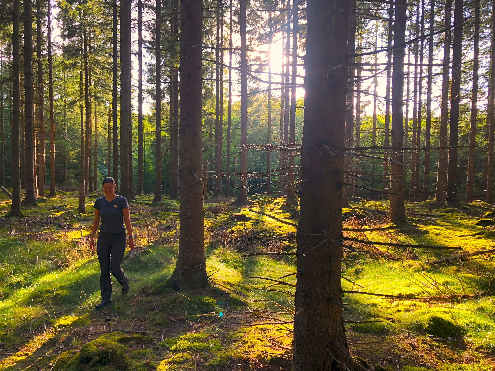
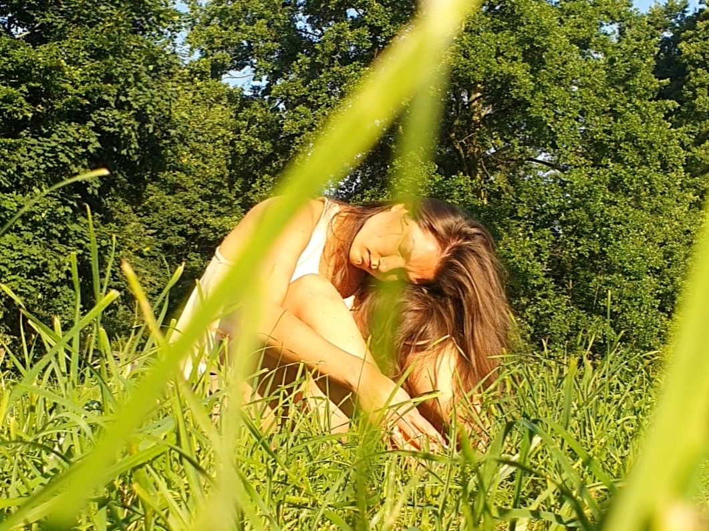
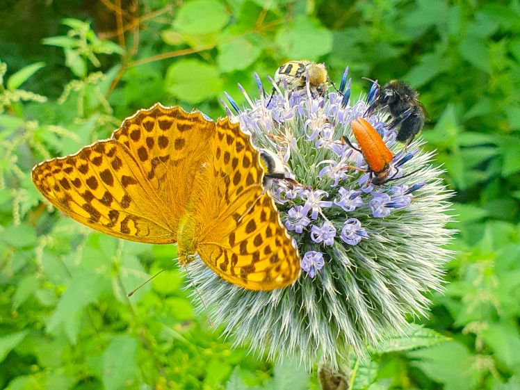
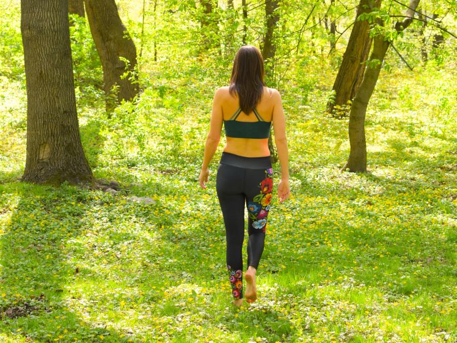

Zajęcia co tydzień w Warszawie, leśny cykl raz w miesiącu i warsztaty w różnych miejscach.
COBONA – dobrostan przez taniec i ruch
Praga Północ
18:45–20:15
Dom Kultury Praga
ul. Dąbrowszczaków 2
sala 45, IV piętro
Żoliborz
18:15–19:45
Żoliborski Dom Kultury
Fort Sokolnickiego
ul. Stefana Czarnieckiego 51
sala taneczna
Śródmieście
17:15–18:45
Dom Kultury Śródmieście, Pracownie Artystyczne
ul. Foksal 11
IV piętro
Bezpłatny roczny cykl o uważności, kontakcie z naturą i budowaniu z nią relacji. Spotykamy się raz w miesiącu, w sobotę.
Warszawa Wawer (Międzylesie)
Najbliższe spotkania · 11:00–12:30
Konferencja · warsztat
„Szkoła, w której można oddychać”
Warsztat COBONA na konferencji Fundacji Kiedy Cichnie Dzwonek.
7 listopada, sobota, 14:15–16:45
Żoliborz
ul. Elbląska 51
Nowe wydarzenia wkrótce.
24 praktyki ruchowe na 24 dni
Jutro otworzy się kolejne okienko. Poprzednie dni są pod spodem – możesz do nich wracać.
Cały Kalendarz adwentowy COBONA jest już otwarty: 24 praktyki ruchowe COBONA, po 15 minut, dla ciała, oddechu i uważności. Wracaj do nich, kiedy chcesz – w domu, w swoim tempie.
Kliknij dowolne okienko poniżej albo obejrzyj wszystkie praktyki po kolei na YouTube.
Cała playlista na YouTube →COBONA to podejście do ruchu i pracy z ciałem opierające się na połączeniu z naszą fizycznością i z naturą.
Połączenie pozwala nam na uważne odczuwanie, obecność, radość z ruchu i budowanie relacji - ze sobą, z innymi i ze światem, w którym jesteśmy zakorzenione.

Zatrzymujesz się i słuchasz swojego ciała. Czujesz puls serca, rytm oddechu, przepływ energii. Odkrywasz, czego potrzebujesz. Wyrażasz siebie w ruchu i odpoczynku. Dajesz sobie czas i uwagę. To połączenie ze sobą daje Ci siłę, by odważnie wyjść do świata.
Spotykasz innych. Zostajesz zauważona i zauważasz drugą osobę, słuchasz, jak wyraża się słowami i ciałem. Dzielisz się ruchem i uważnością. Tworzysz wspólny rytm, czujesz przepływ energii. Odkrywasz radość ze wspólnego ruchu. Odnajdujesz poczucie więzi i przynależności. Współtworzysz społeczność.


Wychodzisz na zewnątrz i chłoniesz to, co jest tu i teraz - zapach powietrza, szorstkość kory, ciepło słońca na skórze. Zauważasz piękno i mądrość przyrody. Czerpiesz z niej spokój, inspirację, siłę. Czujesz, że jesteś jej częścią - zanurzona w większym, żywym organizmie.
Cześć! Jestem Agnieszka Gwadera i zapraszam Cię do odkrywania siebie przez ruch - bez oceniania, bez presji.
Znajdź język swojego ciała, który pomoże Ci poczuć się swobodniej, uważniej i bliżej siebie.
Na moich zajęciach ruch łączy się z uważnością i relacjami - to przestrzeń, gdzie możesz być dokładnie taką, jaką jesteś, i gdzie spotkasz inne osoby, które tak samo chcą się otworzyć i poczuć radość ze wspólnego ruchu.
Czerpię inspirację z natury, z jej harmonii i różnorodności - chcę, żebyś poczuła tę lekkość, siłę i spokój także w Twoim ciele i życiu.
Jeśli masz ochotę poruszyć się inaczej, poznać siebie głębiej i spotkać ludzi, którzy cenią prawdziwe, empatyczne spotkania - zapraszam Cię do wspólnego ruchu.
Odkryj siebie przez ruch. Połącz się z ciałem. Zakorzeń się w naturze.
Skontaktuj się